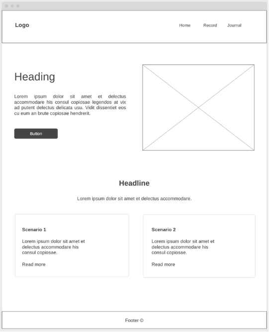
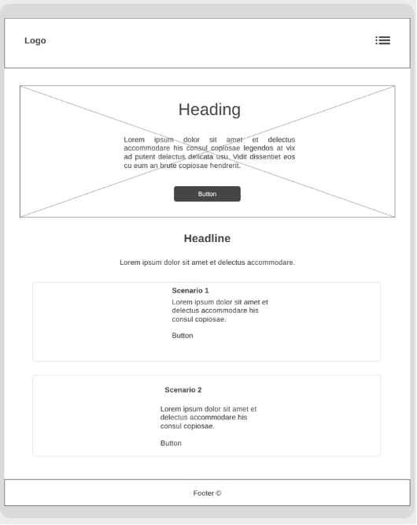

Site Name: Home Education Journal
This name refers to what the website is about: "Home Education" - as it's primary focus is on home education families. "Journal" - refers to the way you can write and record information.
Site Purpose:
The purpose of this website is to allow homeschooling families a place to record learning that is happening each day, for records keeping and end of year meetings with moderators. Learning can look different and it's not always possible to have physical written work from children for each subject they do so having somewhere to write and store information in one place can make it much easier.
Scenarios:
- What counts as learning?
- How do I use the Home Education Journal?
Nearly everything children do can be considered learning. Baking muffins is mathematics (fractions, measurements), reading stories to their siblings (language arts, comprehension), jumping on the trampoline (physics - energy), playing games on the computer (technology).
It's easy! There's always a lot to think about with home schooling so we wanted to make the process of recording one less thing to worry about. All you need to do is complete the form with as much information as you would like and it will save for future reference. You can always refer to this website
Color Schema:
- Primary text font color: Black #000000
- Secondary text font color: White #ffffff
- Primary color: Teal #607a72
- Secondary color: Yellow #D5C874
- Accent color: Orange #CEAF64;
Typography:
- Heading font: Libre Baskerville, serif
- Body font: Lato, sans-serif
Wireframes:

